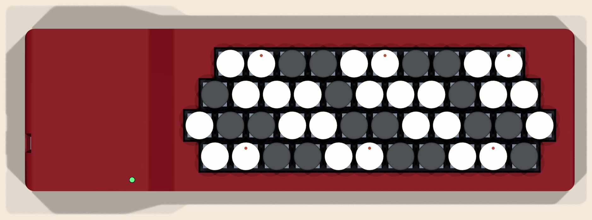
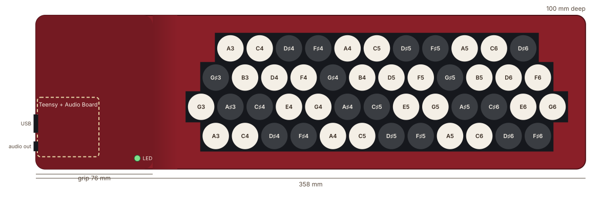
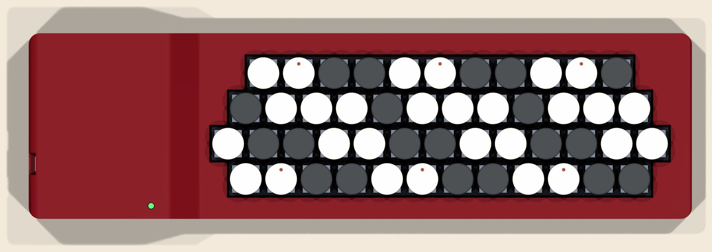
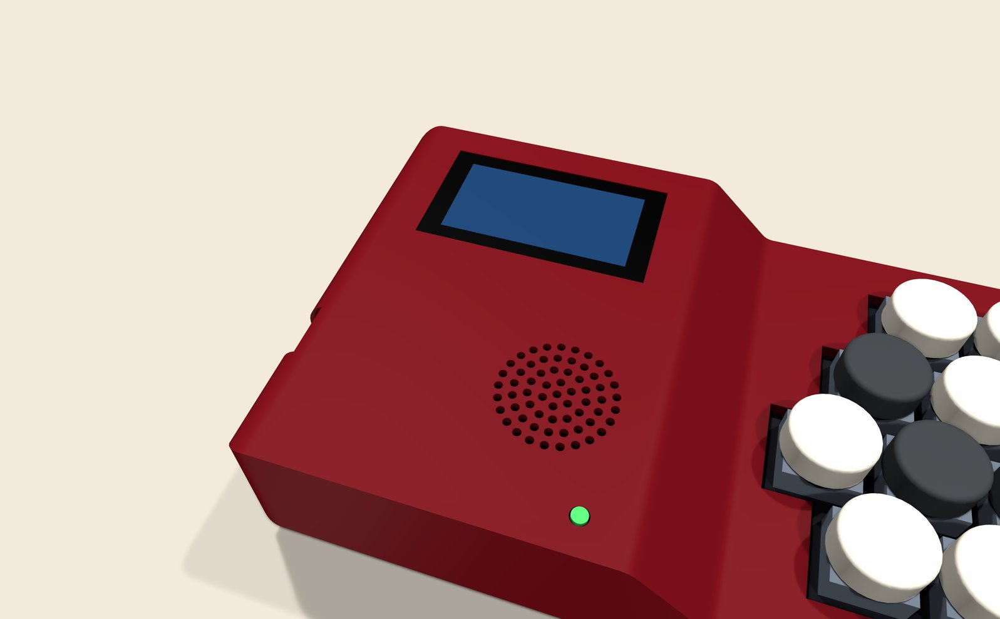
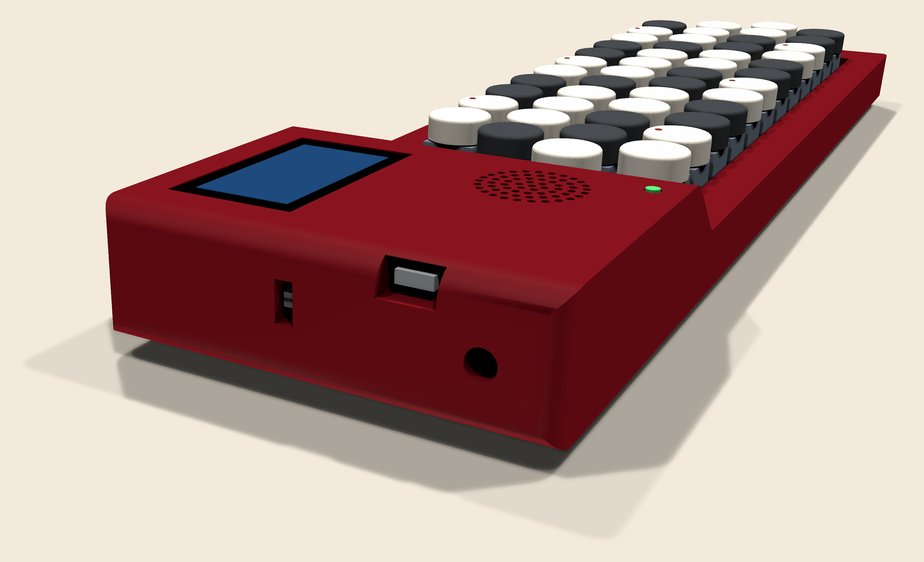
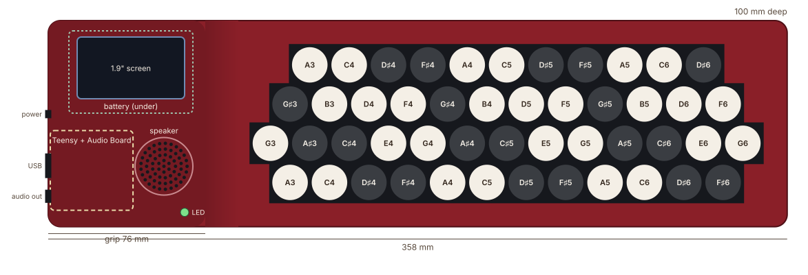
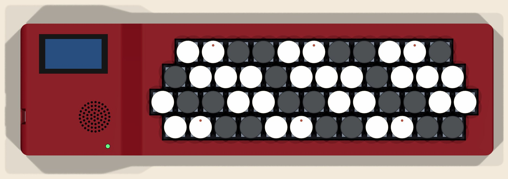

BeatConfused Studio
eTutti models
Three concepts built from one design: the eTuttino, the eTutti and the eTuttiChorus. Each one keeps everything the one before it has and adds to it. These are layouts to look at and compare, not build instructions: to build the current eTuttino, see the manuals.
Drawn to the same scale, the three models differ only at the right end (one more key per row) and in the grip (screen and speaker). Click any picture to see it in high resolution.


Model 1 · compact
eTuttino

The eTuttino's 44 keys (C-griff, G3–E6) and nothing more on the outside: one LED by the ramp, the USB socket and the headphone output in the grip's left face. The grip already has the room the bigger models use.
- Keys44
- RangeG3–E6
- Size339 × 100 mm
- In the gripTeensy 4.0 + Audio Board, LED; back half free
Height: 30.5 mm grip, 15.7 mm keyboard (26.5 mm to the key tops)


Model 2 · three octaves
eTutti

The same grip and the same button layout, with one more key at the right end of every row: row 1 up to F♯6, row 2 up to G6, row 3 up to F6 and row 4 up to D♯6. That makes 48 keys and exactly three octaves, G3 to G6, for 19 mm more length.
- Keys48
- RangeG3–G6
- Size358 × 100 mm
- In the gripthe same as the eTuttino
Height: 30.5 mm grip, 15.7 mm keyboard (26.5 mm to the key tops)




Model 3 · stand-alone
eTuttiChorus

The eTutti made portable: it plays without a computer or a cable. Everything new goes in the grip, so the keyboard doesn't change.
On top, towards the back, a 1.9-inch colour screen (320 × 170, the size and place of the Corsair Vanguard 96's LCD) for the instrument, register and volume. In front of it, beside the electronics, a discreet round speaker grille over a small 28 mm driver, the way some keyboards hide notebook speakers in their case. Under the screen, a rechargeable battery (3.7 V, about 2000 mAh). A power switch joins the USB socket and the headphone output on the left face; the USB socket also charges the battery.
- Keys48
- RangeG3–G6
- Size358 × 100 mm
- In the gripTeensy 4.0 + Audio Board, screen, speaker, battery, LED
Height: 30.5 mm grip, 15.7 mm keyboard (26.5 mm to the key tops)








Side by side
| eTuttino | eTutti | eTuttiChorus | |
|---|---|---|---|
| Keys | 44 | 48 | 48 |
| Range | G3–E6 | G3–G6 | G3–G6 |
| Size | 339 × 100 mm | 358 × 100 mm | 358 × 100 mm |
| Sound | headphone / line out | headphone / line out | built-in speaker + headphone out |
| Screen | — | — | 1.9" colour |
| Power | USB | USB | battery or USB |
Sizes are design targets of the concept, worked out from the eTuttino's parts; they will move when a model is detailed into a real board and case.
Três conceitos feitos a partir de um mesmo projeto: o eTuttino, o eTutti e o eTuttiChorus. Cada um mantém tudo o que o anterior tem e acrescenta algo. São layouts para ver e comparar, não instruções de montagem: para montar o eTuttino atual, veja os manuais.
Na mesma escala, os três modelos só diferem na ponta direita (uma tecla a mais por fileira) e na pega (tela e alto-falante). Clique em qualquer imagem para ver em alta resolução.
Modelo 1 · compacto
eTuttino
As 44 teclas do eTuttino (C-griff, Sol3–Mi6) e nada mais por fora: um LED junto à rampa, o USB e a saída de fone na face esquerda da pega. A pega já tem o espaço que os modelos maiores usam.
- Teclas44
- ExtensãoSol3–Mi6
- Tamanho339 × 100 mm
- Na pegaTeensy 4.0 + Audio Board, LED; metade de trás livre
Altura: pega 30,5 mm, teclado 15,7 mm (26,5 mm até o topo das teclas)
Modelo 2 · três oitavas
eTutti
A mesma pega e a mesma disposição dos botões, com uma tecla a mais na ponta direita de cada fileira: fileira 1 até Fá♯6, fileira 2 até Sol6, fileira 3 até Fá6 e fileira 4 até Ré♯6. São 48 teclas e exatamente três oitavas, de Sol3 a Sol6, com 19 mm a mais de comprimento.
- Teclas48
- ExtensãoSol3–Sol6
- Tamanho358 × 100 mm
- Na pegao mesmo do eTuttino
Altura: pega 30,5 mm, teclado 15,7 mm (26,5 mm até o topo das teclas)
Modelo 3 · independente
eTuttiChorus
O eTutti portátil: toca sem computador e sem cabo. Tudo o que é novo fica na pega, então o teclado não muda.
Em cima, na parte de trás, uma tela colorida de 1,9 polegada (320 × 170, o tamanho e o lugar da tela do Corsair Vanguard 96) para instrumento, registro e volume. À frente dela, ao lado da eletrônica, uma grade redonda de alto-falante, discreta, sobre um alto-falante pequeno de 28 mm, como alguns teclados escondem alto-falantes de notebook na caixa. Sob a tela, uma bateria recarregável (3,7 V, cerca de 2000 mAh). Uma chave liga/desliga se junta ao USB e à saída de fone na face esquerda; o próprio USB carrega a bateria.
- Teclas48
- ExtensãoSol3–Sol6
- Tamanho358 × 100 mm
- Na pegaTeensy 4.0 + Audio Board, tela, alto-falante, bateria, LED
Altura: pega 30,5 mm, teclado 15,7 mm (26,5 mm até o topo das teclas)
Lado a lado
| eTuttino | eTutti | eTuttiChorus | |
|---|---|---|---|
| Teclas | 44 | 48 | 48 |
| Extensão | Sol3–Mi6 | Sol3–Sol6 | Sol3–Sol6 |
| Tamanho | 339 × 100 mm | 358 × 100 mm | 358 × 100 mm |
| Som | fone / saída de linha | fone / saída de linha | alto-falante + saída de fone |
| Tela | — | — | 1,9" colorida |
| Energia | USB | USB | bateria ou USB |
As medidas são metas do conceito, calculadas a partir das peças do eTuttino; elas vão mudar quando um modelo for detalhado em placa e caixa de verdade.
Tres conceptos hechos a partir de un mismo diseño: el eTuttino, el eTutti y el eTuttiChorus. Cada uno conserva todo lo que tiene el anterior y le añade algo. Son layouts para ver y comparar, no instrucciones de montaje: para montar el eTuttino actual, mira los manuales.
A la misma escala, los tres modelos solo cambian en el extremo derecho (una tecla más por fila) y en el agarre (pantalla y altavoz). Haz clic en cualquier imagen para verla en alta resolución.
Modelo 1 · compacto
eTuttino
Las 44 teclas del eTuttino (C-griff, Sol3–Mi6) y nada más por fuera: un LED junto a la rampa, el USB y la salida de auriculares en la cara izquierda del agarre. El agarre ya tiene el sitio que usan los modelos más grandes.
- Teclas44
- ExtensiónSol3–Mi6
- Tamaño339 × 100 mm
- En el agarreTeensy 4.0 + Audio Board, LED; mitad trasera libre
Altura: agarre 30,5 mm, teclado 15,7 mm (26,5 mm hasta las teclas)
Modelo 2 · tres octavas
eTutti
El mismo agarre y la misma disposición de botones, con una tecla más al final de cada fila: la fila 1 hasta Fa♯6, la fila 2 hasta Sol6, la fila 3 hasta Fa6 y la fila 4 hasta Re♯6. Son 48 teclas y exactamente tres octavas, de Sol3 a Sol6, con 19 mm más de largo.
- Teclas48
- ExtensiónSol3–Sol6
- Tamaño358 × 100 mm
- En el agarrelo mismo que el eTuttino
Altura: agarre 30,5 mm, teclado 15,7 mm (26,5 mm hasta las teclas)
Modelo 3 · autónomo
eTuttiChorus
El eTutti portátil: suena sin ordenador y sin cable. Todo lo nuevo va en el agarre, así que el teclado no cambia.
Arriba, hacia atrás, una pantalla a color de 1,9 pulgadas (320 × 170, el tamaño y el sitio de la pantalla del Corsair Vanguard 96) para instrumento, registro y volumen. Delante, junto a la electrónica, una rejilla redonda de altavoz, discreta, sobre un altavoz pequeño de 28 mm, como algunos teclados esconden altavoces de portátil en la caja. Bajo la pantalla, una batería recargable (3,7 V, unos 2000 mAh). Un interruptor de encendido se une al USB y a la salida de auriculares en la cara izquierda; el mismo USB carga la batería.
- Teclas48
- ExtensiónSol3–Sol6
- Tamaño358 × 100 mm
- En el agarreTeensy 4.0 + Audio Board, pantalla, altavoz, batería, LED
Altura: agarre 30,5 mm, teclado 15,7 mm (26,5 mm hasta las teclas)
Lado a lado
| eTuttino | eTutti | eTuttiChorus | |
|---|---|---|---|
| Teclas | 44 | 48 | 48 |
| Extensión | Sol3–Mi6 | Sol3–Sol6 | Sol3–Sol6 |
| Tamaño | 339 × 100 mm | 358 × 100 mm | 358 × 100 mm |
| Sonido | auriculares / línea | auriculares / línea | altavoz + salida de auriculares |
| Pantalla | — | — | 1,9" a color |
| Alimentación | USB | USB | batería o USB |
Las medidas son objetivos del concepto, calculados a partir de las piezas del eTuttino; cambiarán cuando un modelo se detalle en placa y caja de verdad.